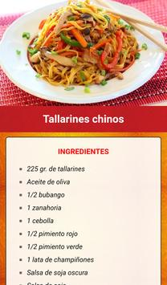

Welcome to Blog
Recetas de cocina. +20.000 recetas fáciles paso a paso
2021.07.06 18:06Descubre Aperitivos y tapas Arroces y cereales Aves y caza Carne Cócteles y bebidas Consejos de cocina Ensaladas Guisos y Potajes Huevos y lácteos Legumbres Mariscos Pan y bollería Pasta Pescado Postres Salsas Sopas y cremas Verduras Destacado Pan y bollería Receta de Empanada de queso y bacón Destacado Postres Postres sin harina Destacado Pasta Receta de Ñoquis de polenta Destacado Cócteles y bebidas Tragos y cócteles con whisky Recetas de Aperitivos y tapas Canapés Empanadas Bocadillos y sándwiches Cremas para untar Recetas de Arroces y cereales Risottos Paellas Arroces sueltos Arroces con carne Recetas de Aves y caza Pollo Pavo Conejo Pato Recetas de Carne Cerdo Ternera Vaca Lomo Cócteles y bebidas Batidos Cócteles Jugos y zumos Ponche Consejos de cocina Trucos y técnicas Nutrición y salud Ideas para condimentar Consejos de compra Recetas de Ensaladas Ensaladas saludables Ensaladas con frutas Ensaladas con pescado Ensaladas de pasta Recetas de Guisos y Potajes Guiso Potajes Cocido Migas Recetas de Huevos y lácteos Tortillas Tortitas Queso Huevos revueltos Recetas de Legumbres Garbanzos Lentejas Alubias Frijoles Recetas de Mariscos Camarones Calamares Langostinos Pulpo Recetas de Pan y bollería Bizcochos Galletas Pan Cupcakes Recetas de Pasta Espaguetis Pizza Macarrones Lasaña Recetas de Pescado Salmón Merluza Atún Bacalao Recetas de Postres Tartas Postres con frutas Flan Helado Recetas de Salsas Salsas para carnes y verduras Salsas rojas Salsas blancas Mayonesa Recetas de Sopas y cremas Sopas Cremas Caldos Gazpachos Recetas de Verduras Patata Berenjena Otras verduras Calabacín Nuevo Arroces y cereales Receta de Pastel de choclo con queso Nuevo Carne Receta de Albóndigas suecas Nuevo Aperitivos y tapas Receta de Tarta de atún y espinaca Nuevo Pan y bollería Receta de Coca de llardons (chicharrones) Nuevo Pan y bollería Receta de Cuadraditos de naranja Nuevo Pan y bollería Receta de Pan de remolacha Nuevo Guisos y Potajes Receta de Carapulcra con sopa seca Nuevo Pasta Receta de Chow mein de pollo Nuevo Postres Receta de Brownie sin harina Nuevo Postres Receta de Natilla piurana Nuevo Aperitivos y tapas Receta de Choclo con queso Nuevo Verduras Receta de Nuggets vegetarianos Salsas Receta de Ají de huacatay Nuevo Pan y bollería Receta de Galletas marmoladas Nuevo Sopas y cremas Receta de Sopa criolla Más visto Postres Receta de Pie de limón y merengue fácil Nuevo Postres Receta de Frejol colado Nuevo Postres Receta de Tarta de ricota y naranja Más visto Postres Receta de Torta húmeda de chocolate decorada Más visto Postres Receta de Budín de pan casero Sopas y cremas Receta de Gazpacho de aguacate Nuevo Aperitivos y tapas Receta de Tarta de choclo y salsa blanca Nuevo Legumbres Receta de Ensalada de pallares Nuevo Consejos de cocina Fitonutrientes - Qué son, tipos y para qué sirven Nuevo Pan y bollería Receta de Pepas integrales Nuevo Aperitivos y tapas Receta de Banderillas coreanas Más visto Huevos y lácteos Receta de Panqueques súper fáciles de hacer Más visto Aperitivos y tapas Receta de Ceviche peruano Nuevo Consejos de cocina Desayunos con huevo Nuevo Aves y caza Receta de Ejotes con pollo Nuevo Cócteles y bebidas Recetas de mojitos de sabores Nuevo Sopas y cremas Receta de Gazpacho de sandía Nuevo Pan y bollería Receta de Rollos de canela y manzana Nuevo Legumbres Receta de Tacu tacu de lentejas Nuevo Aperitivos y tapas Receta de Enchiladas de pipián Más visto Pan y bollería Receta de Queque fácil Nuevo Pan y bollería Receta de Galletas integrales sin azúcar Nuevo Pan y bollería Receta de Pan de papa para hamburguesa Nuevo Arroces y cereales Receta de Chaufa de quinua ¡Quiero ver más! Si el mundo de la cocina te fascina, en RecetasGratis descubrirás una infinidad de recetas riquísimas que deleitarán incluso a los paladares más exigentes. En nuestra web encontrarás todo tipo de
recetas de cocina
capaces de sorprender a los paladares más exquisitos. Contamos con cocineros experimentados en todos los ámbitos de la cocina que trabajan para ofrecerte las mejores recetas caseras, fáciles y rápidas de hacer.Entrantes, increíbles aperitivos, todo tipo de ensaladas, pastas, sopas, arroces, carnes, pescados, repostería RecetasGratis sorprende con una gran variedad de recetas de cocina fáciles a la vez que gustosas, que te dejarán sin palabras. Encontrarás recetas sanas de varias cocinas del mundo: española, colombiana, argentina, mexicana, peruana, chilena, italiana, etc.
En nuestra web encontrarás recetas de cocina casera ideales para hacer platos para todos los gustos y dietas: vegetarianos, veganos, celiacos, alérgicos al huevo, sin azúcar Bastará con que decidas cuál de nuestras recetas quieres hacer y te pongas a ello.
Redes sociales Otros idiomas Receitas de cozinha © recetasgratis.net 2021 Quiénes somos Contacta con nosotros Términos y Condiciones Política de privacidad Política de cookies